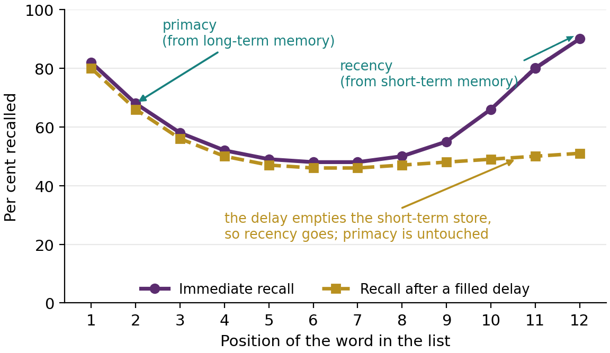
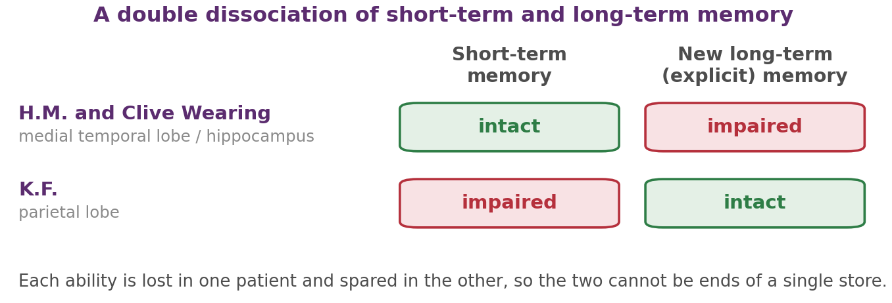
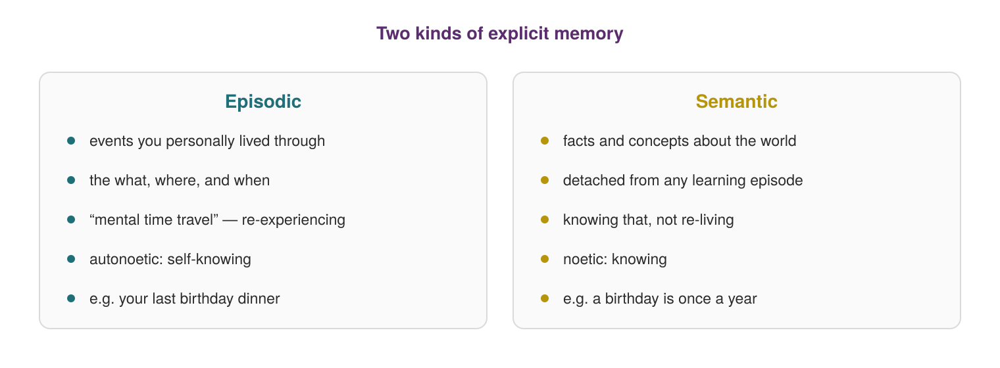
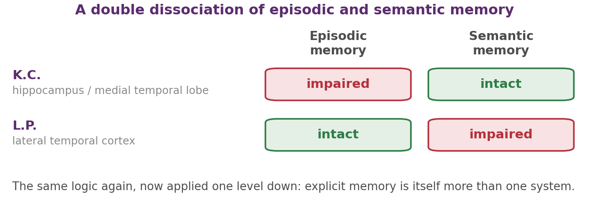
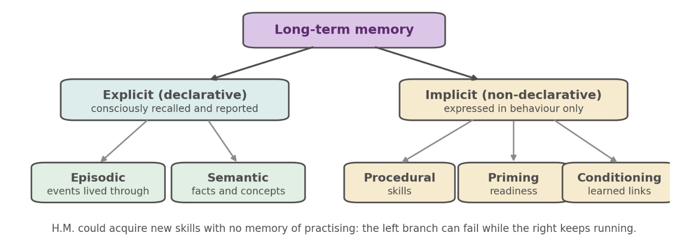
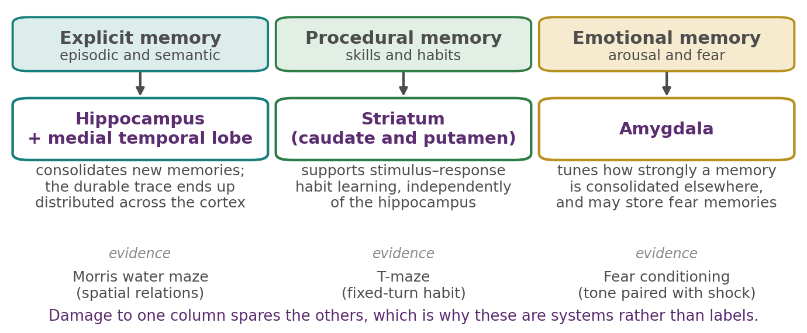

Chapter 4
Long-Term Memory: Structure
Where this chapter sits
Chapter 3 ended with a claim about control: that prefrontal cortex acts as a domain-general controller, selecting among items held in working memory much as it selects among stimuli in the world. But almost everything you know is not in that workspace right now. Your childhood address, how to ride a bicycle, the meaning of the word “chapter”: none of it is currently being held by a central executive, and none of it needs to be. It sits in long-term memory, available when called for.
This chapter is about the structure of that store: not how memories are formed, which is the next chapter, but what kinds there are and how we know they are genuinely different systems rather than convenient labels. Chapter 1 introduced Tulving's taxonomy and promised that these types “come apart in the brain”. This chapter is where that promise is paid, and the currency is dissociation.
One method runs through everything that follows. To show that two abilities depend on separate systems, it is not enough to find someone who is bad at one of them, because general damage makes people worse at most things. What is needed is a crossed pair: one case where ability A fails and B survives, and another where B fails and A survives. That pattern, a double dissociation, cannot be explained by one system damaged to a greater or lesser degree. Here we apply it repeatedly, and each application carves memory at a different joint.
Learning objectives
4.1 The reach of long-term memory, and a first dissociation
Long-term memory holds information over intervals from minutes to a lifetime, with no known limit on capacity. But its most useful early evidence comes not from its size but from a simple list-learning result that anyone can replicate in an afternoon.
Give people a list of words one at a time and ask them to recall as many as they can, and recall depends on where in the list a word appeared: items from the beginning and the end are remembered better than those in the middle (Andrade & Walker, 2019). This is the serial position curve, described systematically by Murdock (1962), and it has two parts. The primacy effect is the advantage for the early items; the recency effect is the advantage for the last few.
The standard explanation ties the two ends to two different stores. Early items are remembered well because they arrived when there was little else to rehearse, so they were rehearsed more often and encoded into long-term memory, which makes primacy a long-term-memory effect (Andrade & Walker, 2019; Murdock, 1962). The last items are remembered well for an entirely different reason: they are still sitting in short-term memory at the moment recall begins, which makes recency a short-term-memory effect.
Notice that this is an interpretation, not an observation. The curve itself is just a curve, and a single-store account could in principle produce the same shape. What converts interpretation into evidence is a manipulation that should affect one end and not the other, and Glanzer and Cunitz (1966) supplied it. Insert a short filled delay between the end of the list and recall, thirty seconds of counting aloud, and the recency effect vanishes while primacy is left untouched (Figure 4.1). That is exactly what you would predict if recency depends on a fragile store that the delay empties, and primacy on a durable store that the delay cannot reach. One curve, two systems, distinguished by an experiment rather than by assertion.

One honest complication is needed here, because the account is tidier than the evidence. Recency effects also appear over intervals far too long for any short-term store to be involved: ask people to recall the rugby matches they have attended over several seasons, or the restaurants they have visited over months, and the most recent ones still come most readily. This long-term recency shows that a recency advantage does not by itself prove that a short-term store is responsible, and some theorists take it to suggest that both ends of the curve reflect one retrieval process operating on different degrees of distinctiveness. The Glanzer and Cunitz result remains good evidence for two stores, because the selective effect of the delay still needs explaining. But “recency equals short-term memory” is a serviceable rule rather than a law, and knowing where it leaks is part of knowing the finding.
4.2 Two stores, two codes
If short-term and long-term memory are different systems, they might represent information differently, and they do. Short-term memory leans on an acoustic code. The errors people make when holding a string of letters are sound-based confusions, recalling B for V rather than B for R, which is precisely the phonological similarity effect you met in §3.4 and the reason the phonological loop is described as a sound-based store. Long-term memory leans on a semantic code. Over longer intervals the confusions change character and become meaning-based, recalling “large” for “big”. The system that holds material briefly cares mostly about how it sounds; the system that holds it durably cares mostly about what it means. The split is a matter of emphasis, not an absolute rule, as the next section shows.
Release from proactive interference
The cleanest demonstration that short-term memory can also code meaning is release from proactive interference. Proactive interference is the build-up of old learning that drags down new learning. Give people a series of trials, each presenting three words drawn from a single category, say fruits, followed by a few seconds of counting backwards before recall, and recall on each successive trial gets worse as the earlier fruits intrude (Andrade & Walker, 2019; Wickens et al., 1976). Now switch the category on the next trial, to professions, and recall leaps back up to roughly its original level. The switch has released the new list from the interference.
The point is subtle but it is the whole argument, so it is worth stating slowly. Nothing about the physical task changed at the switch: same number of words, same presentation, same test. The only thing that changed was the meaning of the items. So whatever was doing the interfering must have been organised by meaning. If short-term memory filed material only by sound, moving from fruits to professions would be no more of a release than moving from one fruit list to another. The effect is therefore not just a demonstration that interference exists; it is a measurement of the code the interfering system uses. And because each recall came only seconds after presentation, that code is at work in short-term memory, not only in long-term memory.
Recall, recognition, and remembering versus knowing
How we test memory also matters, because different tests make different demands. In free recall you must produce the material yourself with no support, which requires you to generate a search of your own store. In cued recall you are given a hint, such as the category a word belonged to. In recognition you are shown the item itself and asked only whether you have met it before, which supplies the item and requires a decision rather than a search.
The three tests are ordered in difficulty, and the gaps between them are large. Given a list of fifty words drawn from a handful of categories, you might produce around a third of them in free recall, but prompting with the category names can lift retrieval to something like three quarters (Hedges, 2022). Nothing was added to memory in between. The material was there the whole time and the cue simply made it reachable. That matters for interpreting any claim that something has been forgotten: what has usually been shown is that it could not be retrieved under those particular conditions, which is not at all the same as its being gone. Keep the distinction between availability and accessibility in mind; it becomes central in the next chapter.
A refinement of the recognition test gives us a behavioural handle on something that will matter a great deal in §4.4. When people recognise an item, they can be asked to say which of two experiences they are having. Either they actually recollect encountering it, with some of the surrounding context coming back, or they simply know it was there without any accompanying sense of the episode. These are remember and know judgements, and the distinction is not a curiosity: the same correct recognition response can rest on two quite different kinds of memory. Hold that in mind, because it is the experimental counterpart of the conceptual distinction we turn to next.
4.3 The method: H.M., Clive Wearing and K.F.
The strongest case that short-term and long-term memory are separate systems comes from patients who fail in opposite ways. You met the pair briefly in §3.1, where the point was to establish that the modal model's central division is real. Here we look at the cases more closely, because they also establish the method that the rest of the chapter runs on.
H.M., Henry Molaison, had large parts of his medial temporal lobes, including the anterior two-thirds of the hippocampus, removed in 1953 to control severe epilepsy. The seizures improved and the cost was catastrophic. His short-term memory was normal: he could hold a string of digits and carry on a conversation for as long as his attention stayed on it. He retained memories from well before the surgery, his intelligence and personality were essentially unaffected, and he could still acquire new motor skills. What he could not do was form new long-term explicit memories. He would meet the same person daily for years and greet each meeting as the first (Scoville & Milner, 1957). Short-term memory intact; new long-term memory gone.
Clive Wearing, a musician whose brain infection destroyed his hippocampus and neighbouring regions, shows a similar anterograde profile from a different cause (Graham & Griffin, 2025; Wilson et al., 1995). Unusually for an amnesic patient, his semantic memory is impaired as well as his episodic memory (Wilson et al., 1995), yet he can still conduct and play the piano, both implicit procedural skills, yet he cannot hold new experiences for more than about thirty seconds and so experiences himself as constantly waking for the first time. Two different routes lead to broadly similar damage and a similar pattern of sparing and loss, although Wearing's retrograde amnesia is far denser than H.M.'s: he has lost most of his memory for the events of his own past.
K.F. shows the mirror image. After damage to the parietal lobe, his short-term memory was severely impaired, with a digit span of only one or two items, yet he could still form and retain new long-term memories more or less normally (Shallice & Warrington, 1970; Warrington & Shallice, 1969). Short-term memory impaired; long-term memory intact.

Now the logic, stated carefully, because the rest of the chapter depends on it. Suppose memory were a single store and these patients simply had more or less of it. Then whoever was worse off should be worse at everything memory-related. That is not what we see (Figure 4.2). H.M. has a normal digit span and at floor on new learning; K.F. is the reverse. There is no amount of damage to one store that produces both profiles. The abilities must therefore be supported by at least partly separate machinery, and the conclusion follows from the crossing rather than from either case alone.
Two cautions keep this honest. First, a double dissociation shows that the systems are separable, not that they are wholly independent or that each maps onto one tidy brain region. Second, these are individual people with idiosyncratic injuries, not experimental manipulations, so the inference always carries some risk that something incidental about a particular case is doing the work. That is exactly why converging cases matter, and why Clive Wearing adds something rather than merely repeating H.M. With the method established, we can use it.
4.4 Episodic and semantic memory
Long-term explicit memory is itself not one thing. Tulving (1972) drew the distinction that organises the rest of this chapter. Episodic memory is memory for events you personally experienced, the what, where and when of your last birthday, recalled by mentally re-entering the scene. Semantic memory is your store of facts and concepts about the world, that Perth is in Western Australia, or what a birthday is, detached from any memory of learning it (Andrade & Walker, 2019; Graham & Griffin, 2025).
Two contrasts sharpen this. The first is specific versus generic: an episodic memory is of one particular occasion, whereas a semantic memory is general knowledge that holds regardless of when you acquired it. The second, and Tulving's (1985) deeper claim, is about the kind of awareness each involves. Episodic retrieval is autonoetic, a self-knowing that amounts to mental time travel, actually re-experiencing the past from the inside. Semantic retrieval is merely noetic: knowing that something is so, without reliving anything (Figure 4.3). This is where the remember-versus-know judgements of §4.2 earn their place. They are the laboratory operationalisation of autonoetic and noetic awareness, which means Tulving's distinction is not only conceptual but measurable in ordinary participants.

The evidence that they are separate systems
The distinction is not just conceptual; the two dissociate in patients, and in opposite directions, which is the method of §4.3 applied one level down. K.C., after a head injury that damaged the hippocampus and medial temporal lobe, lost the ability to recall any personally experienced event. His episodic memory was gone, yet his semantic knowledge of facts and language stayed largely intact: he knew that things were true without being able to remember a single occasion of experiencing them. The reverse case, L.P., a woman with damage to lateral temporal cortex, showed the opposite profile, with impaired semantic memory and episodic memory relatively spared. Because episodic memory is the casualty in one patient and semantic memory in the other, the two form a genuine double dissociation, not one ability viewed from two angles (Figure 4.4).

Neuroimaging in healthy people agrees, though with an important qualification. Functional MRI shows that retrieving episodic and semantic memories activates different networks: episodic retrieval leaning on the hippocampus and medial temporal lobe together with midline and parietal areas, semantic retrieval on lateral temporal and frontal cortex. The qualification is that these networks overlap substantially rather than being anatomically separate, which fits the patient data better than a clean split would. Separable systems that share machinery is the usual finding in cognitive neuroscience, and it is a more useful expectation than a set of independent modules.
Episodic memory and the sense of self
There is a further reason the episodic/semantic distinction matters, and it goes beyond taxonomy. Semantic memory gives you a world: a store of what is the case, which would be much the same store if someone else had acquired it. Episodic memory gives you a life. Every episodic memory has you in it, positioned at a particular time, which is why Tulving called its characteristic awareness self-knowing rather than simply knowing. On that account the capacity to re-enter your own past is not a convenience bolted onto memory; it is part of what makes there be a continuous someone whose past it is.
K.C. is the case that makes this concrete rather than merely philosophical. When his episodic memory was lost, what went with it was not only the record of events. Asked about his personal future as well as his personal past, he reportedly described his mind as blank: he could not place himself at any other point in time in either direction. His semantic knowledge of the world was largely intact, and he knew a great deal of factual information about his own life, which is to say his personal semantic memory survived. What he had lost was the ability to occupy any moment other than the present one. The self that persists across time turns out to depend on the same system that remembers last Tuesday.
This is also why the distinction is hard to feel from the inside until it is pointed out. Most of what you know about yourself arrives as fact rather than as scene, and you are unlikely to notice which is which unless you look.
Autobiographical memory and semanticisation
Your autobiographical memory, the story of your own life, is a blend of both. Episodic scenes, the day you moved house, sit embedded in semantic facts about yourself, which city you grew up in. Facts about oneself that carry personal significance, your own date of birth or your childhood phone number, sit between the two as what is sometimes called personal semantic memory: general knowledge whose subject happens to be you.
The two kinds interact in both directions, and both directions are worth knowing. Going one way, knowledge often begins as an episode and fades to a fact. You may still recall the specific afternoon you learned that Canberra is Australia's capital, but with time only the fact survives while the episode dissolves. This gradual conversion is called semanticisation, and it is one reason very old memories feel more like things known than events re-lived: the autonoetic component has drained away while the content remains. Going the other way, a semantic fact tied to a vivid personal episode is remembered better than one learned in isolation, which is a practical argument for connecting new material to something you have actually done.
4.5 Implicit memory
Everything so far has been explicit, or declarative, memory: knowledge we can consciously bring to mind and report. But much of what we have learned shows up only in behaviour, with no accompanying sense of remembering at all. This is implicit, or non-declarative, memory, and H.M. and Clive Wearing are the reason we know it is a separate system rather than a weak form of the same one. H.M. could acquire new motor skills across days of practice while having no conscious memory of any practice session (Milner, 1962), and Clive Wearing keeps skills such as playing the piano even though most of his explicit memory for his own past is gone (Graham & Griffin, 2025). The learning was demonstrably there, in the performance; the recollection was demonstrably absent. There are three main kinds.
Procedural memory
Procedural memory is knowing how: riding a bicycle, touch-typing, playing a scale. Two features mark it out. It is often impossible to verbalise, as you will find if you try to explain how to balance a bicycle to someone who cannot (Graham & Griffin, 2025). And it is remarkably durable: the accomplished guitarist who has not played for years can still play.
One consequence is worth dwelling on, because it looks like a defect and is actually a signature. As a skill becomes well practised it becomes automatic, and automatic performance does not lay down an explicit record of itself. Ask an expert to describe exactly what their fingers are doing and they may draw a blank, not because they have forgotten but because the knowledge is no longer of a kind that can be reported. This is sometimes called expert-induced amnesia. The everyday version is the drive to work you cannot afterwards describe: the driving was skilled and successful, and almost none of it was registered episodically. That combination, competent performance with no retrievable episode, is what implicit memory looks like from the inside.
Priming
Priming is a change in how you process a stimulus because of recent or frequent exposure to it. Read the sentence “He got his materials from the shelves, checked them out, and then left the building”, and you are faster to complete the fragment _ I B _ A _ Y as “library” a moment later, even though the word never appeared and you may not notice the connection: the concept was activated below awareness and the activation outlasted the awareness (Graham & Griffin, 2025). It comes in several forms. Repetition priming involves the same item recurring, and its effect is on perception itself: a primed word or object is identified faster and from poorer or briefer input than an unprimed one, so the same stimulus is literally easier to see the second time. Semantic priming involves a related item, so that “nurse” speeds the recognition of “doctor”, which incidentally tells us something about how semantic memory is organised: concepts close in meaning are close in whatever space the system uses. Priming therefore reaches both ends of cognition, altering what we perceive as well as what we judge, and in neither case does it announce itself.
Then there is the uncomfortable one. The propaganda effect is the finding that mere repetition of a claim makes it feel more likely to be true. Two details make it more than a curiosity. It works even when the claim is false, and it works even when people have been warned in advance that the material may be inaccurate. The reason it is so hard to defend against is that it operates through familiarity rather than through belief. Repetition makes a statement easier to process, ease of processing feels like recognition, and recognition feels like truth. The judgement arrives as a feeling about the claim, not as a memory of having encountered it, so there is nothing for deliberate scepticism to get hold of. This is the clearest case in the unit of an implicit process shaping an explicit judgement, and it is worth knowing about for reasons well beyond the exam.
Classical conditioning
Two simpler forms of implicit learning are worth naming first, because they need no association at all. In habituation, a response weakens with repeated presentation of the same stimulus, as when a repeated poke in the back stops making you jump. In sensitisation, a response strengthens after a strong or significant stimulus, as when a loud bang makes you startle at the sound of a door that you would normally ignore. Neither involves learning a relationship between two things, which is why they are grouped as non-associative learning (Hedges, 2022).
Classical conditioning, which you met in Chapter 1 as one of behaviourism's two mechanisms, leaves implicit traces too. Once an animal has learned to associate a sound with food, the sound alone comes to trigger the response, and no conscious act of remembering is involved at any point. The same applies to the emotional associations we acquire without noticing: a smell that produces unease, a place that produces calm. Behaviourism treated this kind of learning as the whole story of memory. The taxonomy below shows what it is: one branch of one half of the structure.
One important kind of memory is missing from this taxonomy altogether, and the absence is worth noticing. Everything catalogued here is retrospective: memory for what has already happened. Memory for what you intend to do, such as passing on a message or taking a tablet at eight, fits nowhere in Figure 4.5, and it is taken up in Chapter 6.

4.6 The physiology
The structural story has an anatomical counterpart, and it is the strongest reason to believe the taxonomy is more than bookkeeping (Graham & Griffin, 2025).
Consolidation, not storage
The hippocampus and surrounding medial temporal lobe matter above all for forming long-term declarative memories rather than for holding them indefinitely: for consolidating a fragile new experience into a durable trace that comes to be held, over time, in the cortex (Hedges, 2022). That emphasis explains the otherwise puzzling profile of H.M. and Clive Wearing. Medial temporal damage spares existing skills and much previously acquired knowledge but blocks the formation of new explicit ones, because the warehouse is intact and it is the loading dock that has gone. Note that this is a claim about emphasis, not a clean division of labour: the medial temporal structures contribute to the storage of declarative memories as well as to their consolidation, and “consolidation, not storage” is a useful slogan rather than a precise description.
Where is the durable trace, then? The classic attempt to find out was Karl Lashley's decades-long search for the engram, summarised in his 1950 paper (Lashley, 1950). He trained rats to run a complex maze, then lesioned different regions of cortex in different animals and retested them. What he found was not a location but a relationship: the size of the lesion predicted how much memory was lost, and its position did not. That null result for location is a positive result for distribution, and it remains the best simple demonstration that a memory is not filed anywhere in particular. Current evidence points the same way, with memories spread across networks of cortical and subcortical areas and more deeply processed material held in stronger and more widely distributed connections. Short-term maintenance, as Chapter 3 showed, depends instead on prefrontal and parietal regions.
A mechanism for consolidation
If memories really are handed gradually from hippocampus to cortex, there ought to be a process that does the handing, and there is a strong candidate. During rest and sleep the hippocampus produces sharp-wave ripples, brief bursts of high-frequency activity, and during these bursts the sequences of place cells that fired during earlier exploration are replayed, sometimes in the original order and sometimes in reverse. The ripple frequency is well suited to inducing lasting synaptic change in the cells that CA1 projects to, including distant cortical targets, which is exactly what a mechanism for gradual cortical recruitment would need (Moser et al., 2015).
What makes this more than a plausible story is that it can be interrupted. Selectively disrupting sharp-wave ripple activity during the rest period after training impairs later memory for the task, which establishes a causal link rather than a correlation. Note what that buys us, because the next subsection will show that the classic human evidence for consolidation is weaker than it looks. It matters that the account also rests on a mechanism that can be identified, blocked, and shown to be necessary in an animal. When one line of evidence turns out to be fragile, the question to ask is always what else is holding the claim up.
The temporal gradient, and why one patient cannot settle it
Consolidation also predicts a temporal gradient: if a memory gradually stops depending on the hippocampus, then damage should spare the distant past more than the recent past. H.M. showed exactly that. His retrograde amnesia was temporally graded, with memories from the years just before surgery lost while memories from his childhood seemed normal. Scoville and Milner (1957) put the gap at about three years, and later testing extended it to roughly eleven. Even the spared childhood memories turned out, under more sensitive testing, to be factually intact but thin on episodic detail, closer to known facts than relived scenes (Steinvorth et al., 2005), which suggests that the gradient holds for semantic memory but perhaps not for episodic memory. It is a satisfying convergence of prediction and observation, and it is routinely taught as such.
It is also weaker evidence than it looks, and the reason is worth more than the finding. H.M. had frequent seizures for years before the operation and was taking a cocktail of anti-epileptic drugs throughout that period, both of which plausibly impaired his ability to form memories in the first place (Hedges, 2022). If the memories of those years were never properly laid down, their absence afterwards tells us nothing about consolidation. So the gradient in H.M. may reflect the state of his brain before surgery as much as the loss of his hippocampus, and we certainly cannot read the timescale of consolidation in healthy people off this one case.
This is the same lesson as the cautions in §4.3, arriving from a different direction. A double dissociation between two patients is strong evidence about architecture, because the crossing does the work. A quantitative claim drawn from inside a single patient, such as how long consolidation takes, is much more fragile, because everything idiosyncratic about that person is now part of the measurement. Knowing which kind of claim you are making is most of the skill in reading this literature.
The hippocampus as a mapmaker
The hippocampus does more than register that something happened. It binds the elements of an experience to their spatial and temporal context, a job often called relational binding, and in doing so it builds something like a map of the world (Hedges, 2022). Two celebrated cell types make this concrete. Place cells in the rodent hippocampus fire only when the animal occupies a particular location, so that the activity of the population traces out where the animal is. Grid cells, in the neighbouring entorhinal cortex that provides the main input to the hippocampus, fire periodically as the animal crosses a wide, familiar environment, with the firing locations forming a roughly hexagonal lattice that tiles the whole space. Because different grid cells have lattices of different spacing and offset, the overlap of many such grids gives a good indication of where the animal is (Hedges, 2022). The two codes are closely related, and the discovery of this positioning system (Hafting et al., 2005; O'Keefe & Dostrovsky, 1971) earned John O'Keefe together with May-Britt and Edvard Moser the 2014 Nobel Prize in Physiology or Medicine.
How the two codes relate is worth getting right, because textbook accounts often overstate it. The Mosers describe grid cells as providing the hippocampus with a metric, a scale against which distance and direction can be measured, and that much is their own claim (Moser et al., 2015). The stronger and more common version goes further: that a place field is simply what you get by adding up several grid patterns of different spacing, which cancel everywhere except at one location. That model is attractive and it is probably incomplete.
The awkward evidence is developmental. If place fields were built exclusively out of grid input, grid cells ought to mature before place cells, or at least alongside them. They do not. When rat pups first leave the nest at around two to two and a half weeks, sharp and well-confined place fields are already present in a large proportion of hippocampal cells, whereas grid cells at that age are only weakly periodic and do not become strongly hexagonal until three to four weeks. Something other than a mature grid must therefore be supporting those early place fields. Two possibilities are live: weak spatial input may be enough, with the sharpening done locally within the hippocampus, or place fields may be built partly from border cells, a third population that fires near the geometric boundaries of an environment and which, unlike grid cells, is adult-like from a pup's very first day outside the nest.
So the secure statement is that the hippocampal formation carries an explicit code for location, that grid cells supply a metric for it, and that the hippocampus is not merely reading its place fields off that grid. That is a good illustration of something worth carrying beyond this unit: a model can be the best available account of a phenomenon and still be wrong about the direction of causation.
The classic behavioural assay is the Morris water maze, in which a rodent must use distant landmarks to find a platform hidden just beneath the surface of an opaque pool. Intact animals learn the location within a few trials and swim straight to it; animals with hippocampal damage swim more or less aimlessly, unable to exploit the spatial relations between landmarks even though their vision and swimming are unimpaired (Morris et al., 1982). The deficit is specifically relational, which is the behavioural signature of what place and grid cells are computing.
Concept cells, and a thread from Chapter 1
The medial temporal lobe holds one further population worth knowing, because it closes a loop opened in Chapter 1. Concept cells, recorded in the human temporal lobe, fire selectively for highly specific content: a neuron that responds to photographs of one particular person. What makes them interesting is that they are not responding to the image. The same cell will fire to that person's written name and to the sound of their name spoken, and often to closely associated material as well, which means it is coding something nearer to the concept than to any sensory pattern (Hedges, 2022).
In Chapter 1 you met three schemes for representing a stimulus in neurons, and the third was sparse coding, in which a small subset of cells fires while most stay silent. The worry raised there about strict specificity coding was the grandmother cell: the implausible idea that one dedicated neuron stands for one familiar person. Concept cells are the empirical resolution of that worry, and they land between the two extremes. They are far too selective to be explained by broad population coding, and too broadly tuned to be grandmother cells in the strict sense: many respond to several related concepts, and each concept appears to be carried by many cells rather than by one. Sparse coding is exactly the middle position they occupy.
The same machinery appears to organise memory in time as well as space, which matters for a chapter that began with a list. When recalling a list, items studied close together tend to be recalled together, an effect known as temporal contiguity, and the most recent items enjoy an advantage. Models of temporal context treat both as consequences of a slowly drifting internal state that becomes bound to each item as it is studied, so that recalling an item reinstates its neighbours' context along with it (Howard & Kahana, 2002). On this view the recency effect of §4.1 is not the emptying of a separate box but the retrieval advantage of the context most similar to the present, which is one reason long-term recency exists at all. Whether that account replaces the two-store explanation or complements it is still argued over, and you now know enough to see why the argument is hard to settle.
Different systems, different structures
The kinds of memory catalogued in §4.5 are not merely a logical taxonomy; they have distinct neural homes, which is why they can be lost independently (Hedges, 2022).
Procedural, habit-like memory depends on the striatum, the caudate nucleus and putamen, rather than on the hippocampus. In rodents this is shown with the T-maze, where an animal learns to turn a fixed way for a reward. Striatal damage impairs this habit learning while leaving hippocampus-dependent tasks intact, and hippocampal damage does the reverse. That is a double dissociation between the declarative and procedural systems, established by lesion rather than by accident, which is exactly the experimental control the human cases of §4.3 could not provide.
Emotional memory recruits the amygdala. Fear conditioning to a tone depends on the lateral amygdala, and selectively destroying the small set of lateral amygdala neurons recruited during learning can erase an already-learned fear in mice (Josselyn, 2010); in humans, amygdala damage removes the normal memory advantage for emotionally arousing material (Cahill et al., 1995). Note the form of the amygdala's contribution, because it is different in kind from the other two. For conditioned fear it may hold part of the trace itself, but for emotionally arousing declarative memories it does not appear to store them so much as tune how strongly they are consolidated elsewhere, which is why we return to it with flashbulb memories later in the unit.

The anatomy therefore mirrors the psychology (Figure 4.6). Distinct memory systems, distinct structures, dissociable in the laboratory and in the clinic. That convergence is the real argument of this chapter: the taxonomy was not imposed on memory for tidiness; it was forced on us by the pattern of what can fail while the rest keeps working.
Chapter summary
Long-term memory holds information from minutes to a lifetime with no known capacity limit. The serial position curve has a primacy effect, attributed to long-term memory, and a recency effect, attributed to short-term memory; a filled delay abolishes recency but not primacy (Glanzer & Cunitz, 1966), which is the evidence that converts the interpretation into a dissociation.
Long-term recency effects over intervals of months show that a recency advantage does not by itself prove short-term storage, so the two-store reading of the curve is a good rule rather than a law.
Short-term memory codes mainly acoustically and long-term memory mainly semantically. Release from proactive interference shows that short-term memory can also code by meaning, because only the meaning of the items changed at the switch.
Recall requires you to generate the material; recognition supplies it and requires only a decision, so apparent forgetting is often a retrieval failure. Remember-versus-know judgements distinguish recollecting an item from merely knowing it was there, and are the laboratory counterpart of autonoetic and noetic awareness.
H.M. and Clive Wearing had intact short-term but impaired new long-term memory; K.F. showed the reverse. The crossing, not either case alone, establishes that the two are separable systems, and this double-dissociation logic is the method used throughout the chapter.
Explicit memory divides into episodic (personally experienced events; autonoetic, mental time travel) and semantic (facts and concepts; noetic). K.C. and L.P. form a double dissociation between them, and fMRI shows partly separate but substantially overlapping retrieval networks.
Episodic memory is what places you at a particular time, which is why Tulving described its awareness as self-knowing. K.C. lost the ability to occupy any moment other than the present, in either direction, while retaining factual knowledge about his own life, so the self that persists through time depends on the same system that remembers last week.
Autobiographical memory blends episodic scenes with personal semantic facts. Older memories become semanticised, keeping the content while losing the episodic re-experiencing, and semantic facts tied to vivid episodes are better retained.
Implicit memory includes procedural memory, priming (repetition, semantic, and the propaganda effect), and classical conditioning. H.M. could acquire new skills with no recollection of practising, and Clive Wearing keeps skills such as playing the piano despite dense amnesia, which is why implicit memory is held to be a separate system rather than weak explicit memory.
The propaganda effect operates through familiarity rather than belief, which is why it survives an explicit warning.
Physiologically, the medial temporal lobe matters above all for consolidating new explicit memories, which explains the sparing of old memories and skills; “consolidation, not storage” is a useful slogan rather than a precise division of labour. Lashley's engram experiments, in which lesion size predicted memory loss but lesion location did not, are the classic evidence that the durable trace is distributed rather than filed in one place.
H.M.'s temporally graded retrograde amnesia fits consolidation theory, but years of seizures and anti-epileptic medication before surgery may have prevented those memories forming in the first place, so the timescale of consolidation cannot be read off this case.
The hippocampal formation carries an explicit code for location: place cells fire at particular locations, and overlapping grid-cell lattices of differing spacing indicate position (the work recognised by the 2014 Nobel Prize). Grid cells supply a metric, but place fields are not simply summed from grid input: place fields are already sharp in rat pups whose grid cells are still only weakly periodic, and border cells are mature from the first day outside the nest.
Sharp-wave ripples during rest and sleep replay earlier place-cell sequences and are well suited to inducing lasting change in cortical targets. Disrupting them after training impairs later memory for what was learned, which gives consolidation a causal mechanism independent of the human case evidence.
Concept cells in the human temporal lobe fire for a specific person across photographs, written names and spoken names, placing them between population coding and the grandmother cell, and so supporting the sparse coding introduced in Chapter 1.
Temporal-context models account for contiguity and recency in recall, and offer an alternative to the two-store reading of the serial position curve.
The systems map onto distinct structures: hippocampus and medial temporal lobe for explicit memory, striatum for procedural habits, and amygdala for tuning the strength of emotional memories, each dissociable by lesion in animals and by damage in patients.
Self-check questions
Why does a filled delay after a word list abolish the recency effect but leave the primacy effect intact? What does that selective pattern tell you that the shape of the curve alone does not?
Explain why long-term recency effects are awkward for the standard two-store reading of the serial position curve. Does the Glanzer and Cunitz result survive the objection?
What is release from proactive interference, and why does it imply that short-term memory can code by meaning? Identify precisely what changed and what did not at the point of release.
Distinguish recall from recognition. Why should you be cautious about concluding from a recall failure that material has been forgotten?
What are remember and know judgements, and how do they connect to Tulving's distinction between autonoetic and noetic awareness?
Explain why H.M. and K.F. together provide stronger evidence than either alone. Define double dissociation in your answer, and state one thing a double dissociation does not establish.
What does Clive Wearing's case add to H.M.'s, given that the two profiles are so similar?
Distinguish episodic from semantic memory in terms of content, specificity, and the kind of awareness involved. Give an example of a dissociation between them.
K.C. and L.P. show opposite profiles. Set out the dissociation and explain why the fMRI finding of overlapping retrieval networks is consistent with it rather than a problem for it.
What is semanticisation, and how does it change the character of an autobiographical memory over time? Which component is lost and which is kept?
Why is episodic memory, rather than semantic memory, the one tied to a sense of self persisting through time? Use K.C. to explain what is lost and what survives, and distinguish personal semantic memory from episodic memory in your answer.
Give an example of priming affecting what someone perceives and an example of priming affecting what someone judges. Why is it significant that neither announces itself?
Name the three types of implicit memory and give an everyday example of each. How do H.M. and Clive Wearing show that implicit memory is separate from explicit memory rather than a weaker form of it?
Why can an expert often not report what they are doing while doing it? Explain why this follows from what procedural memory is, rather than being a failure of memory.
The propaganda effect persists even when people are warned that the information may be false. Explain why, referring to the stage at which the effect operates, and say what this implies for attempts to correct misinformation by restating it.
In what sense does the hippocampus consolidate rather than store memories, and why is that better treated as a slogan than as a precise division of labour?
What did Lashley's search for the engram find, and why is a null result about location a positive result about distribution?
H.M.'s retrograde amnesia was temporally graded, which is what consolidation theory predicts. Explain why his medication and seizure history nevertheless make this weak evidence for the timescale of consolidation, and relate your answer to the cautions about single cases in §4.3.
What are place cells and grid cells, and what does the Morris water maze show about what the hippocampus contributes to memory? Why is it significant that the deficit is specifically relational?
Grid cells are often said to supply the coordinate system from which place fields are computed. Explain which part of that claim is well supported and which part the developmental evidence from rat pups calls into question. What role might border cells play?
What are sharp-wave ripples, and what does disrupting them after training show? Explain why this evidence carries extra weight given the weakness of the temporal gradient in H.M.
How do concept cells bear on the choice between population coding, sparse coding and the grandmother cell from Chapter 1?
Distinguish habituation from sensitisation, and explain why both are classed as non-associative learning.
Free recall, cued recall and recognition of the same material give very different scores. What does that tell you about the difference between a memory being available and being accessible?
The T-maze result is described as a double dissociation established by lesion rather than by accident. Explain the difference and why it matters for the strength of the inference.
In what way is the amygdala's contribution to memory different in kind from the hippocampus's and the striatum's?
Model answers to these questions are in the answers companion, Chapter 4. Try each question yourself before you look.
Attribution and licence
This chapter is licensed under a Creative Commons Attribution-NonCommercial-ShareAlike 4.0 International (CC BY-NC-SA 4.0) licence. It adapts and remixes the sources below; changes were made, including restructuring, rewriting into the author's voice, and the addition of original framing, figures, prompts, and enrichment.
Graham and Griffin (2025), Cognitive Psychology, Chapter 7: Memory Systems and Processes (7.4 types of long-term memory; 7.8 brain areas associated with memory) (Central New Mexico Community College). CC BY-NC-SA 4.0. Base source for the explicit/implicit taxonomy, the implicit-memory types, the Clive Wearing case, and memory neuroanatomy.
Hedges (2022), “Memory Systems”, in Introduction to Neuroscience. CC BY-NC-SA 4.0, verified against the book's own copyright statement. Source for the hippocampal spatial code, Lashley's engram experiments, concept cells, the caveat about H.M.'s medication and seizure history, non-associative learning, the free-versus-cued recall contrast, and the striatal and prefrontal material in §4.6. Portions of that chapter are themselves remixed from the Open Neuroscience Initiative (Lim), CC BY-NC 4.0, which is compatible with this book.
Andrade and Walker (2019), Cognitive Psychology (LibreTexts / College of the Canyons): 4.9–4.10 (serial position), 5.3 (types of long-term memory), 5.4 (decay versus interference). CC BY 4.0. Base source for serial position, the episodic/semantic types, and proactive interference.
Cited but not adapted: Moser, Rowland and Moser (2015) is © Cold Spring Harbor Laboratory Press, all rights reserved. It is cited in the ordinary way, and nothing from it has been reproduced.
All other studies cited in this chapter are described from standard knowledge in the author's own wording, with no source text adapted.
Full bibliographic details for every work cited in this chapter, including the sources named above, are given in the References below.
References
Andrade, M., & Walker, N. (2019). Cognitive psychology. College of the Canyons; LibreTexts. https://socialsci.libretexts.org/Bookshelves/Psychology/Cognitive_Psychology/Cognitive_Psychology_(Andrade_and_Walker)
Cahill, L., Babinsky, R., Markowitsch, H. J., & McGaugh, J. L. (1995). The amygdala and emotional memory. Nature, 377(6547), 295–296. https://doi.org/10.1038/377295a0
Glanzer, M., & Cunitz, A. R. (1966). Two storage mechanisms in free recall. Journal of Verbal Learning and Verbal Behavior, 5(4), 351–360. https://doi.org/10.1016/S0022-5371(66)80044-0
Graham, R., & Griffin, S. (2025). Cognitive psychology. Central New Mexico Community College. https://nmoer.pressbooks.pub/cognitivepsychology/
Hafting, T., Fyhn, M., Molden, S., Moser, M.-B., & Moser, E. I. (2005). Microstructure of a spatial map in the entorhinal cortex. Nature, 436(7052), 801–806. https://doi.org/10.1038/nature03721
Hedges, V. (2022). Memory systems. In Introduction to neuroscience. Michigan State University Libraries. https://openbooks.lib.msu.edu/introneuroscience1/chapter/memory-systems/
Howard, M. W., & Kahana, M. J. (2002). A distributed representation of temporal context. Journal of Mathematical Psychology, 46(3), 269–299. https://doi.org/10.1006/jmps.2001.1388
Josselyn, S. A. (2010). Continuing the search for the engram: Examining the mechanism of fear memories. Journal of Psychiatry & Neuroscience, 35(4), 221–228. https://doi.org/10.1503/jpn.100015
Lashley, K. S. (1950). In search of the engram. Symposia of the Society for Experimental Biology, 4, 454–482.
Milner, B. (1962). Les troubles de la mémoire accompagnant des lésions hippocampiques bilatérales. In P. Passouant (Ed.), Physiologie de l'hippocampe (pp. 257–272). Centre National de la Recherche Scientifique.
Morris, R. G. M., Garrud, P., Rawlins, J. N. P., & O'Keefe, J. (1982). Place navigation impaired in rats with hippocampal lesions. Nature, 297(5868), 681–683. https://doi.org/10.1038/297681a0
Moser, M.-B., Rowland, D. C., & Moser, E. I. (2015). Place cells, grid cells, and memory. Cold Spring Harbor Perspectives in Biology, 7(2), Article a021808. https://doi.org/10.1101/cshperspect.a021808
Murdock, B. B., Jr. (1962). The serial position effect of free recall. Journal of Experimental Psychology, 64(5), 482–488. https://doi.org/10.1037/h0045106
O'Keefe, J., & Dostrovsky, J. (1971). The hippocampus as a spatial map: Preliminary evidence from unit activity in the freely-moving rat. Brain Research, 34(1), 171–175. https://doi.org/10.1016/0006-8993(71)90358-1
Scoville, W. B., & Milner, B. (1957). Loss of recent memory after bilateral hippocampal lesions. Journal of Neurology, Neurosurgery, and Psychiatry, 20(1), 11–21. https://doi.org/10.1136/jnnp.20.1.11
Shallice, T., & Warrington, E. K. (1970). Independent functioning of verbal memory stores: A neuropsychological study. Quarterly Journal of Experimental Psychology, 22(2), 261–273. https://doi.org/10.1080/00335557043000203
Steinvorth, S., Levine, B., & Corkin, S. (2005). Medial temporal lobe structures are needed to re-experience remote autobiographical memories: Evidence from H.M. and W.R. Neuropsychologia, 43(4), 479–496. https://doi.org/10.1016/j.neuropsychologia.2005.01.001
Tulving, E. (1972). Episodic and semantic memory. In E. Tulving & W. Donaldson (Eds.), Organization of memory (pp. 381–403). Academic Press.
Tulving, E. (1985). Memory and consciousness. Canadian Psychology, 26(1), 1–12. https://doi.org/10.1037/h0080017
Warrington, E. K., & Shallice, T. (1969). The selective impairment of auditory verbal short-term memory. Brain, 92(4), 885–896. https://doi.org/10.1093/brain/92.4.885
Wickens, D. D., Dalezman, R. E., & Eggemeier, F. T. (1976). Multiple encoding of word attributes in memory. Memory & Cognition, 4(3), 307–310. https://doi.org/10.3758/BF03213181
Wilson, B. A., Baddeley, A. D., & Kapur, N. (1995). Dense amnesia in a professional musician following herpes simplex virus encephalitis. Journal of Clinical and Experimental Neuropsychology, 17(5), 668–681. https://doi.org/10.1080/01688639508405157